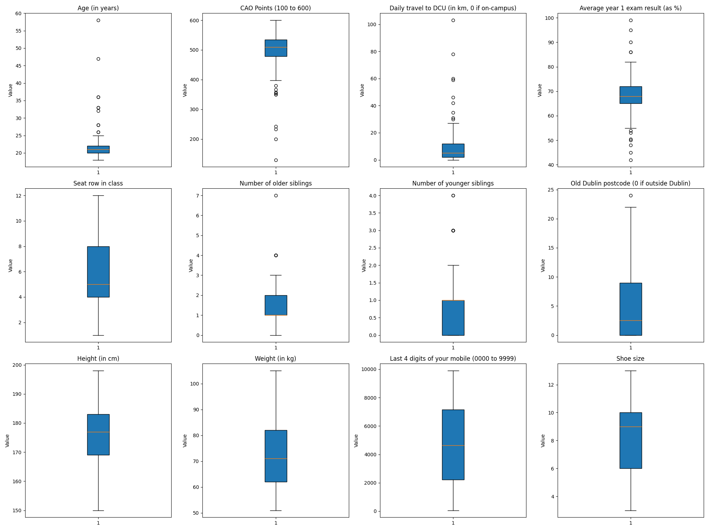
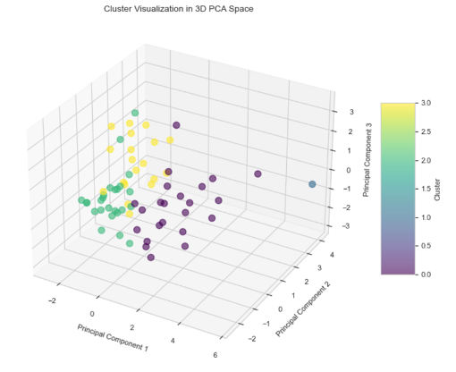
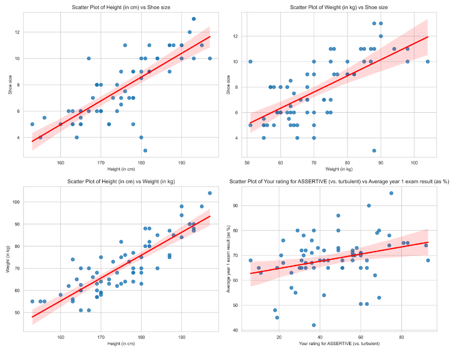

Personality Profiling
In this project, we conducted a comprehensive analysis of a merged dataset derived from two distinct surveys: demographics and personality traits of fictitious friends. Our objective was to explore potential correlations and insights that could be applied in marketing analytics, enhancing our understanding of target demographics.
We began by normalizing and merging two complex datasets. The demographics data was initially imported and cleansed to handle outliers and missing values using Python’s pandas and sklearn libraries. Notable preprocessing steps included:
- Identification and normalization of outliers using Whisker Box Plots. 
- Filling missing values through regression models based on statistically significant correlations.
- Data Merging: We performed an inner join to merge the demographics data with personality traits data, ensuring consistency in participant identifiers across both datasets.
- Further Data Cleaning: Post-merge, we reassessed the data for new outliers and inconsistencies, employing z-score calculations and manual corrections to refine the dataset.
For exploratory data analysis we deployed various statistical tools to describe and explore the merged dataset. Techniques included:
- Descriptive statistics to understand the baseline characteristics.
- Correlation matrices to identify significant relationships between demographic and personality variables.
- PCA and K-Means clustering to uncover underlying patterns and groupings in the data. 4 clusters where used and the clusters where displayed in a 3D space after dimensionality reduction.

The 4 clusters are displayed across the three principal components

Insights and Implications
The analysis revealed interesting correlations such as the relationship between physical characteristics (height, weight, shoe size) and gender, as well as personality traits linked to academic performance.
These four strong correlations showcase the previously mentioned relationships, as well some insights on the personality data. The rating for Extraversion (vs. introversion) is correlated to the rating for intuition (vs. observation), and the rating for thinking (vs. feeling) is correlated to the rating for assertiveness (vs. turbulent). To further investigate how the personality data is affected by other variables, we ran a regression analysis for the personality traits. Here we could observe taller individuals tend to have higher ratings for thinking (vs. feeling) (Coef = 1.0569, p-value = 0.013). Higher academic performance in the first year is associated with higher ratings for assertiveness (Coef = 0.6979, p-value = 0.011). The other correlations were not considered as they were either uninteresting or had p values greater than 0.05. However, it is worth noting that individuals with better academic performance tend to be more assertive, which may suggest higher levels of self-confidence.
Libraries used
- Pandas & Sklearn: For data processing and machine learning tasks
- Matplotlib & Seaborn: For data visualization and graphical representations.
Reflection
This project not only enhanced our data handling skills but also provided a platform to critically analyze the applicability of theoretical data in practical scenarios, such as marketing analytics. The limitations encountered, particularly with data consistency and accuracy, underscored the importance of robust data collection methods.